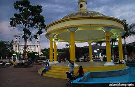
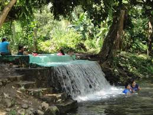

Sonsonate es un departamento de El Salvador cuya cabecera es el municipio homónimo. Sonsonate es una antigua provincia de la Capitanía General de Guatemala que obtuvo su independencia de España en 1821 y que a partir de 1824 junto con la provincia de San Salvador formaron el país que hoy es llamado El Salvador.
Sonsonate es una ciudad y municipio del departamento homónimo, del cual es también su cabecera. Tiene una población estimada de 72 158 habitantes para el año 2013.5La localidad se fundó con el nombre de «Villa de la Santísima Trinidad» en el año 1553, en una zona productora de cacao. El año 1821 formaba parte del territorio de Guatemala, pero en 1823 se anexó a El Salvador. La celebración de la Semana Santa en Sonsonate se considera parte del patrimonio religioso del país.
En la zona existe la denominada Ruta de las Flores recorrido que incluye la visita a poblados ricos en tradiciones de este departamento y Ahuachapán. Tales municipios incluyen a Nahuizalco, Salcoatitán, Juayúa, Apaneca, Concepción de Ataco y Tacuba.1 Está también la Ruta de los Naranjos que ofrece diversas actividades de montaña, uno de los grandes atractivos turísticos es el complejo natural "Parque nacional los volcanes" que comparte con el departamento de Santa Ana. Sonsonate es llamada la cuna del montañismo Salvadoreño debido a su situación geográfica en la cordillera Apaneca-Lamatepec, los volcanes Izalco y San Marcelino están dentro de su jurisdicción y el arrecife de coral llamado "Los Cóbanos".
